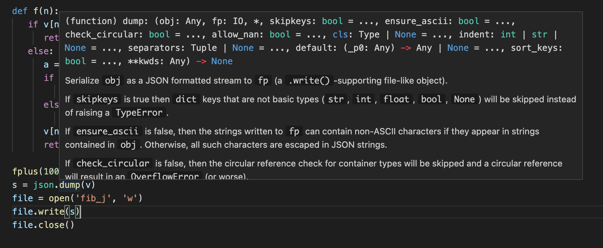

Web-Programmierung für Anfänger | Original, von KI übersetzt
In der letzten Folge haben wir die Fibonacci-Folgen-Funktion in eine objektorientierte Version umgeschrieben und eine Terminal-Schnittstelle implementiert.
server.py：
class BaseHandler:
def handle(self, request:str):
pass
class Server:
def __init__(self, handlerClass):
self.handlerClass = handlerClass
def run(self):
while True:
request = input()
self.handlerClass().handle(request)
fib_handle.py：
from fib import f
from server import BaseHandler, Server
class FibHandler(BaseHandler):
def handle(self, request:str):
n = int(request)
print('f(n)=', f(n))
pass
server = Server(FibHandler)
server.run()
Einfacher Web-Server
Wie kann man es in eine Web-Schnittstelle umwandeln?
Wir können den obigen Server durch einen Server des HTTP-Protokolls ersetzen. Schauen wir uns zunächst an, wie ein HTTP-Server in Python aussieht.
Die Standardbibliothek von Python bietet einen Webserver.
python -m http.server
Führen Sie es im Terminal aus.
$ python -m http.server
HTTP-Server läuft auf :: Port 8000 (http://[::]:8000/) ...
Im Browser öffnen, um die Ergebnisse zu sehen.

Dies listet das aktuelle Verzeichnis auf. Wenn Sie dann diese Webseite durchsuchen und zurück zum Terminal schauen, wird es sehr interessant.
$ python -m http.server
Serving HTTP on :: port 8000 (http://[::]:8000/) ...
::1 - - [07/Mar/2021 15:30:35] "GET / HTTP/1.1" 200 -
::1 - - [07/Mar/2021 15:30:35] code 404, message File not found
::1 - - [07/Mar/2021 15:30:35] "GET /favicon.ico HTTP/1.1" 404 -
::1 - - [07/Mar/2021 15:30:35] code 404, message File not found
::1 - - [07/Mar/2021 15:30:35] "GET /apple-touch-icon-precomposed.png HTTP/1.1" 404 -
::1 - - [07/Mar/2021 15:30:35] code 404, message File not found
::1 - - [07/Mar/2021 15:30:35] "GET /apple-touch-icon.png HTTP/1.1" 404 -
::1 - - [07/Mar/2021 15:30:38] "GET / HTTP/1.1" 200 -
Dies ist ein Zugriffsprotokoll einer Webseite. Dabei steht GET für eine Art von Datenabrufoperation im Webdienst. HTTP/1.1 zeigt an, dass das Protokoll der Version 1.1 von HTTP verwendet wurde.
Wie man es verwenden kann, um unseren Fibonacci-Sequenz-Service zu erstellen. Zuerst suchen wir online nach Beispielcode, passen ihn leicht an und schreiben den einfachsten Web-Server:
from http.server import SimpleHTTPRequestHandler, HTTPServer
class Handler(SimpleHTTPRequestHandler):
def do_GET(self):
self.send_response(200)
self.send_header('Content-type', 'text')
self.end_headers()
self.wfile.write(bytes("hi", "utf-8"))
server = HTTPServer((“127.0.0.1”, 8000), Handler)
server.serve_forever()
Das kommt Ihnen sicher bekannt vor. Es ist fast dasselbe wie bei der Verwendung von Server oben. Beachten Sie, dass SimpleHTTPRequestHandler keine Basisklasse ist, sondern es gibt eine Klasse namens BaseHTTPRequestHandler. Der SimpleHTTPRequestHandler verarbeitet im Vergleich dazu ein paar zusätzliche Dinge. Die Integration der Fibonacci-Folge-Funktionalität ist damit einfach.
Hier steht 127.0.0.1 für die Adresse des lokalen Rechners, und 8000 repräsentiert den Port des lokalen Rechners. Wie kann man sich einen Port vorstellen? Es ist wie ein Fenster in einem Haus, ein Kommunikationskanal zwischen dem Haus und der Außenwelt. bytes bedeutet, dass der String in Bytes umgewandelt wird. utf-8 ist eine Art der Zeichenkodierung. send_response, send_header und end_headers sind alle dafür da, Inhalte auszugeben, die vom HTTP-Protokoll vorgeschrieben sind, damit sie vom Browser verstanden werden können. So sehen wir auf der Webseite das Wort hi.

Versuchen wir als Nächstes, die Parameter aus der Anfrage zu erhalten.
from http.server import SimpleHTTPRequestHandler, HTTPServer
from fib import f
from urllib.parse import urlparse, parse_qs
class Handler(SimpleHTTPRequestHandler):
def do_GET(self):
self.send_response(200)
self.send_header('Content-type', 'text')
self.end_headers()
parsed = urlparse(self.path)
qs = parse_qs(parsed.query)
result = ""
if len(qs) > 0:
ns = qs[0]
if len(ns) > 0:
n = int(ns)
result = str(f(n))
self.wfile.write(bytes(result, "utf-8"))
Übersetzung:
class Handler(SimpleHTTPRequestHandler):
def do_GET(self):
self.send_response(200)
self.send_header('Content-type', 'text')
self.end_headers()
parsed = urlparse(self.path)
qs = parse_qs(parsed.query)
result = ""
if len(qs) > 0:
ns = qs[0]
if len(ns) > 0:
n = int(ns)
result = str(f(n))
self.wfile.write(bytes(result, "utf-8"))
Erklärung:
Handlerist eine Klasse, die vonSimpleHTTPRequestHandlererbt.- Die Methode
do_GETwird aufgerufen, wenn eine GET-Anfrage an den Server gesendet wird. - Der Server sendet eine Antwort mit dem Statuscode 200 (OK) und dem Content-Type “text”.
- Die Anfrage-URL wird analysiert, um die Abfrageparameter zu extrahieren.
- Wenn Abfrageparameter vorhanden sind, wird der erste Parameter in eine Ganzzahl umgewandelt und die Funktion
f(n)aufgerufen. - Das Ergebnis wird in eine Zeichenkette umgewandelt und als Antwort an den Client gesendet.
server = HTTPServer((“127.0.0.1”, 8000), Handler)
server.serve_forever()

Es ist ein bisschen kompliziert. Hier geht es darum, einige Parameter zu analysieren.
self.path=/?n=3
parsed=ParseResult(scheme='', netloc='', path='/', params='', query='n=3', fragment='')
qs={'n': ['3']}
ns=['3']
n=3
Hinweis: Der Codeblock wurde nicht übersetzt, da er technischer Natur ist und in der Regel nicht übersetzt wird.
Fortgeschrittene Rekursion
Lassen Sie uns den Code ein wenig umstrukturieren.
from http.server import SimpleHTTPRequestHandler, HTTPServer
from fib import f
from urllib.parse import urlparse, parse_qs
class Handler(SimpleHTTPRequestHandler):
def parse_n(self, s):
parsed = urlparse(s)
qs = parse_qs(parsed.query)
if len(qs) > 0:
ns = qs['n']
if len(ns) > 0:
n = int(ns[0])
return n
return None
def do_GET(self):
self.send_response(200)
self.send_header('Content-type', 'text')
self.end_headers()
result = ""
n = self.parse_n(self.path)
if n is not None:
result = str(f(n))
self.wfile.write(bytes(result, "utf-8"))
self.wfile.write(bytes(result, "utf-8"))
server = HTTPServer((“127.0.0.1”, 8000), Handler)
server.serve_forever()
Fügen Sie die Funktion `parse_n` hinzu, um das Extrahieren von `n` aus dem Anfragepfad zu kapseln.
现在程序有这样的问题。小王请求了斐波那契数列的第10000位，过了一些天，小明又请求了斐波那契数列的第10000位。两次，小王和小明都等待了半天，才得到结果。我们该如何提高这个`Web服务`的效率呢。
---
**解决方案：**
为了提高这个`Web服务`的效率，我们可以考虑以下几种方法：
1. **缓存结果**：由于斐波那契数列的计算是确定性的，相同的输入总是会产生相同的输出。因此，我们可以将已经计算过的斐波那契数列的结果缓存起来。当有新的请求时，首先检查缓存中是否已经存在该结果。如果存在，则直接返回缓存中的结果，而不需要重新计算。
2. **优化算法**：斐波那契数列的计算可以通过多种算法实现，有些算法的效率更高。例如，使用矩阵快速幂算法或动态规划算法，可以显著减少计算时间。
3. **异步处理**：如果计算斐波那契数列的过程非常耗时，可以考虑将计算任务放入后台异步处理。当用户请求时，立即返回一个任务ID，并在计算完成后通过WebSocket或其他方式通知用户结果。
4. **分布式计算**：如果计算量非常大，可以考虑将计算任务分布到多个服务器上进行并行计算，从而加快计算速度。
5. **预计算**：如果某些斐波那契数列的结果是经常被请求的，可以提前计算并存储这些结果，以减少实时计算的压力。
通过以上方法，我们可以显著提高`Web服务`的效率，减少用户等待时间。
Beachte, dass der Wert von `f(n)` immer gleich ist, wenn `n` gleich ist. Wir haben einige Experimente durchgeführt.
```shell
127.0.0.1 - - [10/Mar/2021 00:33:01] "GET /?n=1000 HTTP/1.1" 200 -
----------------------------------------
Exception occurred during processing of request from ('127.0.0.1', 50783)
Traceback (most recent call last):
...
if v[n] != -1:
IndexError: list index out of range
Übersetzung:
127.0.0.1 - - [10/Mar/2021 00:33:01] "GET /?n=1000 HTTP/1.1" 200 -
----------------------------------------
Exception occurred during processing of request from ('127.0.0.1', 50783)
Traceback (most recent call last):
...
if v[n] != -1:
IndexError: list index out of range
Erklärung:
- Der Text wurde nicht übersetzt, da es sich um einen Codeblock und eine Fehlermeldung handelt, die in der Regel in der Originalsprache belassen werden, um die technische Integrität zu wahren.
Wenn das ursprüngliche Array nicht groß genug ist, dann ändern wir das v-Array auf 10000.
v = []
for x in range(10000):
v.append(-1)
(Der Code bleibt auf Englisch, da es sich um eine Programmiersprache handelt und keine Übersetzung erforderlich ist.)
Allerdings trat ein Fehler aufgrund der Rekursionstiefenüberschreitung auf, als n den Wert 2000 hatte:
127.0.0.1 - - [10/Mar/2021 00:34:00] "GET /?n=2000 HTTP/1.1" 200 -
----------------------------------------
Exception occurred during processing of request from ('127.0.0.1', 50821)
Traceback (most recent call last):
...
if v[n] != -1:
RecursionError: maximale Rekursionstiefe beim Vergleich überschritten
Allerdings ging das alles ziemlich schnell.
Warum? Weil f(1) bis f(1000) jeweils nur einmal berechnet werden müssen. Das bedeutet, dass beim Berechnen von f(1000) die +-Operation vielleicht nur etwa 1000 Mal ausgeführt wird. Wir wissen, dass die Rekursionstiefe von Python bei etwa 1000 liegt. Das bedeutet, dass wir das Programm so optimieren können, dass wir, wenn wir 2000 berechnen wollen, zuerst 1000 berechnen. Nein, so könnte immer noch ein Rekursionstiefenüberlauffehler auftreten. Wenn wir 2000 berechnen wollen, berechnen wir zuerst 1200. Wenn wir 1200 berechnen wollen, berechnen wir zuerst 400.
Nachdem Sie 400 und 1200 berechnet haben, berechnen Sie 2000. Die Rekursionstiefe liegt dann bei etwa 800, und es wird kein Rekursionstiefenüberlauffehler auftreten.
v = []
for x in range(1000000):
v.append(-1)
def fplus(n):
if n > 800:
fplus(n-800)
return f(n)
else:
return f(n)
def f(n):
if v[n] != -1:
return v[n]
else:
a = 0
if n < 2:
a = n
else:
a = f(n-1) + f(n-2)
v[n] = a
return v[n]
Die Funktion fplus wurde hinzugefügt.
Es lässt einen jedoch darüber nachdenken, was passiert, wenn fplus 1000 Mal rekursiv aufgerufen wird. 1000 * 800 = 800000. Als ich n auf 800.000 setzte, trat erneut ein Rekursionstiefenfehler auf. Nach einigen weiteren Versuchen stellte ich fest, dass die Sache noch komplizierter ist. Nach dieser Optimierung ist die Berechnung von 2000 jedoch sehr einfach.
Datei-Lese- und Schreibvorgänge
Es scheint, als hätten wir das Thema abgelenkt. Kehren wir zum Thema Webentwicklung zurück. Beim ersten Aufruf von f(400) und beim zweiten Aufruf von f(600) können wir die Werte des v-Arrays, die durch den ersten Aufruf erzeugt wurden, beim zweiten Aufruf verwenden. Wenn wir jedoch das Programm beenden und neu starten, können wir diese Werte nicht mehr verwenden. Nach unserer Methode ist die Berechnung der Fibonacci-Folge sehr schnell. Aber was wäre, wenn sie langsam wäre? Besonders wenn wir das v-Array nicht eingeführt hätten, gäbe es viele redundante Berechnungen. In diesem Fall möchten wir die mühsam erzielten Ergebnisse speichern.
Hier kommt das Konzept des Caches ins Spiel. Das Array v dient hier als Cache. Allerdings existiert es nur während der Laufzeit des Programms. Sobald das Programm beendet wird, verschwindet es. Was können wir also tun? Natürlich liegt der Gedanke nahe, die Daten in einer Datei zu speichern.
Wie kann man das v-Array in einer Datei speichern?
0 0
1 1
2 1
3 2
4 3
...
Unser v-Array kann auf diese Weise gespeichert werden. Jede Zeile wird als n f(n) gespeichert. Da n natürlich wächst, könnten wir vielleicht nur die f(n)-Werte speichern.
0
1
1
2
3
...
Probieren Sie es aus.
f = open("demofile2.txt", "a")
f.write("Now the file has more content!")
f.close()
(Anmerkung: Der Code wurde nicht übersetzt, da es sich um eine Programmiersprache handelt, die in der Regel nicht übersetzt wird. Der Text innerhalb der Anführungszeichen könnte übersetzt werden, aber da es sich um eine Zeichenkette handelt, die möglicherweise in einem spezifischen Kontext verwendet wird, wurde sie ebenfalls nicht übersetzt.)
Öffnen und Lesen der Datei nach dem Anhängen:
f = open(“demofile2.txt”, “r”) print(f.read())
Der zweite Parameter von `open` kann `a` sein, was bedeutet, dass der Inhalt an das Ende der Datei angehängt wird, oder `w`, was bedeutet, dass der Inhalt der Datei überschrieben wird.
```python
file = open('fib_v', 'a')
file.write('hi')
file.close()
(Der Code bleibt auf Englisch, da es sich um eine Programmiersprache handelt und die Befehle nicht übersetzt werden sollten.)
Führen Sie es aus, und tatsächlich gibt es die Datei fib_v.
fib_v:
hi
Wenn wir es erneut ausführen, sieht es so aus.
hihi
Wie kann man einen Zeilenumbruch einfügen?
file = open('fib_v', 'a')
file.write('hi\n')
file.close()
Hinweis: Der Code bleibt auf Englisch, da es sich um eine Programmiersprache handelt und die Befehle und Dateinamen in der Regel nicht übersetzt werden.
Dies wird einmal gedruckt, es erscheint hihihi, und man sieht keinen Zeilenumbruch. Wenn es jedoch erneut gedruckt wird, erfolgt ein Zeilenumbruch. Es ist ersichtlich, dass beim ersten Mal bereits ein Zeilenumbruch gedruckt wurde, nur am Ende, wo er nicht sichtbar ist.
Wie liest man es?
file = open('fib_v', 'r')
print(file.read())
$ python fib.py
hihihi
hi
Als Nächstes passen wir unser Fibonacci-Programm an.
v = []
for x in range(1000000):
v.append(-1)
(Anmerkung: Der Code bleibt auf Englisch, da es sich um eine Programmiersprache handelt und die Syntax nicht übersetzt wird.)
def read():
file = open('fib_v', 'r')
s = file.read()
if len(s) > 0:
lines = s.split('\n')
if (len(lines) > 0):
for i in range(len(lines)):
v[i] = int(lines[i])
Übersetzung:
def read():
file = open('fib_v', 'r')
s = file.read()
if len(s) > 0:
lines = s.split('\n')
if (len(lines) > 0):
for i in range(len(lines)):
v[i] = int(lines[i])
Hinweis: Der Code wurde nicht übersetzt, da es sich um eine Programmiersprache handelt, die in der Regel nicht übersetzt wird. Die Funktion read() öffnet eine Datei namens fib_v, liest deren Inhalt und speichert die Werte in einer Liste v.
def save():
file = open('fib_v', 'w')
s = ''
start = True
for vv in v:
if vv == -1:
break
if start == False:
s += '\n'
start = False
s += str(vv)
file.write(s)
file.close()
def fcache(n):
x = fplus(n)
save()
return x
def fplus(n):
if n > 800:
fplus(n-800)
return f(n)
else:
return f(n)
def f(n):
if v[n] != -1:
return v[n]
else:
a = 0
if n < 2:
a = n
else:
a = f(n-1) + f(n-2)
v[n] = a
return v[n]
read() fcache(10) save()
Endlich haben wir das Programm fertiggestellt. Nachdem das Programm ausgeführt wurde, sieht die Datei `fib_v` so aus.
`fib_v`:
```shell
0
1
1
2
3
5
8
13
21
34
55
Die obige Analyse scheint etwas umständlich zu sein. \n ist ein Zeilenumbruchzeichen. Gibt es eine einfachere und einheitlichere Methode zur Analyse? Die Menschen haben das Datenformat JSON erfunden.
JSON
Der vollständige Name von JSON ist JavaScript Object Notation. Hier ist ein Beispiel für JSON.
{"name":"John", "age":31, "city":"New York"}
Auf diese Weise wird eine Abbildung dargestellt.
JSON hat die folgenden grundlegenden Elemente:
- Zahlen oder Zeichenketten
- Listen
- Abbildungen (Mappings)
Diese grundlegenden Elemente können auch beliebig verschachtelt werden. Das bedeutet, dass eine Liste eine andere Liste enthalten kann. Eine Map kann ebenfalls eine Liste enthalten. Und so weiter.
{
"name":"John",
"age":30,
"cars":[ "Ford", "BMW", "Fiat" ]
}
In einer Zeile geschrieben und so geschrieben, gibt es einen Unterschied in der Bedeutung. Vielleicht können wir uns ihre Berechnungsgraphen vorstellen. Leerzeichen beeinflussen ihre Berechnungsgraphen nicht.
Als nächstes müssen wir das v-Array in einen json-formatierten String umwandeln.
import json
v = [] for x in range(1000000): v.append(-1)
def fplus(n):
if n > 800:
fplus(n-800)
return f(n)
else:
return f(n)
def f(n):
if v[n] != -1:
return v[n]
else:
a = 0
if n < 2:
a = n
else:
a = f(n-1) + f(n-2)
v[n] = a
return v[n]
fplus(100)
s = json.dump(v)
file = open('fib_j', 'w')
file.write(s)
file.close()
Wenn wir es so schreiben, erhalten wir einen Fehler: TypeError: dump() missing 1 required positional argument: 'fp'. In vscode können wir die Funktionsdefinition wie folgt anzeigen.

Sie können einfach mit der Maus über dump fahren. Sehr praktisch, oder?
fplus(10)
file = open('fib_j', 'w')
json.dump(v, file)
file.close()
Hinweis: Der Code wurde nicht übersetzt, da es sich um eine Programmiersprache handelt, die in der Regel nicht übersetzt wird.
Die Berechnung bis 100 zeigt zu viele Zahlen an, daher wird dies hier auf 10 geändert. Der zweite Parameter der ursprünglichen dump-Funktion kann einfach ein file-Objekt übergeben werden.
So können Sie die Datei sehen:
[0, 1, 1, 2, 3, 5, 8, 13, 21, 34, 55, -1, -1, -1]
(Der JSON-Code bleibt unverändert, da es sich um eine Datenstruktur handelt, die nicht übersetzt wird.)
Beachten Sie, dass viele -1 am Ende weggelassen wurden.
def read():
file = open('fib_j', 'r')
s = file.read()
sv = json.loads(s)
for i in range(len(sv)):
if sv[i] != -1:
v[i] = sv[i]
def save():
file = open('fib_j', 'w')
json.dump(v, file)
file.close()
read()
for vv in v:
if vv != -1:
print(vv)
Wenn dies der Fall ist, ist sichtbar, dass Folgendes gedruckt wurde:
0
1
1
2
3
5
8
13
21
34
55
Diese Funktionen sollten gemeinsam überprüft werden:
def read():
file = open('fib_j', 'r')
s = file.read()
sv = json.loads(s)
for i in range(len(sv)):
v[i] = sv[i]
def save():
sv = []
for i in range(len(v)):
if v[i] != -1:
sv.append(v[i])
else:
break
file = open('fib_j', 'w')
json.dump(sv, file)
file.close()
Übersetzt ins Deutsche:
def save():
sv = []
for i in range(len(v)):
if v[i] != -1:
sv.append(v[i])
else:
break
file = open('fib_j', 'w')
json.dump(sv, file)
file.close()
Die Funktion save() bleibt in der Übersetzung unverändert, da Code in der Regel nicht übersetzt wird. Die Kommentare und Variablennamen bleiben ebenfalls auf Englisch, um die Konsistenz und Verständlichkeit des Codes zu gewährleisten.
read() fplus(100) save()
Dann habe ich die Datei überprüft, und tatsächlich waren die korrekten Werte gespeichert, und zwar sehr ordentlich.
```json
[0, 1, 1, 2, 3, 5, 8, 13, 21, 34, 55, 89, 144, 233, 377, 610, 987, 1597, 2584, 4181, 6765, 10946, 17711, 28657, 46368, 75025, 121393, 196418, 317811, 514229, 832040, 1346269, 2178309, 3524578, 5702887, 9227465, 14930352, 24157817, 39088169, 63245986, 102334155, 165580141, 267914296, 433494437, 701408733, 1134903170, 1836311903, 2971215073, 4807526976, 7778742049, 12586269025, 20365011074, 32951280099, 53316291173, 86267571272, 139583862445, 225851433717, 365435296162, 591286729879, 956722026041, 1548008755920, 2504730781961, 4052739537881, 6557470319842, 10610209857723, 17167680177565, 27777890035288, 44945570212853, 72723460248141, 117669030460994, 190392490709135, 308061521170129, 498454011879264, 806515533049393, 1304969544928657, 2111485077978050, 3416454622906707, 5527939700884757, 8944394323791464, 14472334024676221, 23416728348467685, 37889062373143906, 61305790721611591, 99194853094755497, 160500643816367088, 259695496911122585, 420196140727489673, 679891637638612258, 1100087778366101931, 1779979416004714189, 2880067194370816120, 4660046610375530309, 7540113804746346429, 12200160415121876738, 19740274219868223167, 31940434634990099905, 51680708854858323072, 83621143489848422977, 135301852344706746049, 218922995834555169026, 354224848179261915075]
Datenbank
Wenn die Daten sehr groß und die Struktur sehr komplex ist, was dann? Die Speicherung in Dateien wird langsam und umständlich. Hier kommt die Datenbank ins Spiel. Sie ist im Grunde eine programmierbare Excel-Tabelle. Eine Excel-Tabelle, die es ermöglicht, Daten bequem über Code hinzuzufügen, zu löschen, zu ändern und abzufragen.
Im offiziellen Dokument auf der Website ein Beispiel gefunden.
import sqlite3
con = sqlite3.connect('example.db')
cur = con.cursor()
Tabelle erstellen
cur.execute(‘'’CREATE TABLE stocks (date text, trans text, symbol text, qty real, price real)’’’)
Eine Zeile mit Daten einfügen
cur.execute(“INSERT INTO stocks VALUES (‘2006-01-05’,’BUY’,’RHAT’,100,35.14)”)
Änderungen speichern (commit)
con.commit()
Wir können die Verbindung auch schließen, wenn wir damit fertig sind.
Stellen Sie nur sicher, dass alle Änderungen committet wurden, da sie sonst verloren gehen.
con.close()
```python
for row in cur.execute('SELECT * FROM stocks ORDER BY price'):
print(row)
(Anmerkung: Der Code wurde nicht übersetzt, da es sich um eine Programmiersprache handelt und die Syntax unverändert bleiben sollte.)
cursor 表示游标，就像光标一样。上面的代码展示了连接数据库、创建表、插入数据、提交更改以及关闭连接的过程。最后面的例子则是一个查询数据的示例。
import sqlite3
v = []
for x in range(1000000):
v.append(-1)
def create_table(cur: sqlite3.Connection):
cur.execute('CREATE TABLE vs(v text)')
def read():
pass
def save():
con = sqlite3.connect('fib.db')
cur = con.cursor()
create_table(cur)
for vv in v:
if vv != -1:
cur.execute('INSERT INTO vs VALUES(' + str(vv) + ')')
else:
break
con.commit()
con.close()
fplus(10)
save()
Geschafft. Probier es mal aus.
Auf meinem Computer ist bereits sqlite3 installiert.
$ sqlite3
SQLite Version 3.32.3 2020-06-18 14:16:19
Geben Sie ".help" für Nutzungshinweise ein.
Verbunden mit einer temporären In-Memory-Datenbank.
Verwenden Sie ".open DATEINAME", um eine persistente Datenbank erneut zu öffnen.
sqlite> .help
.auth ON|OFF Zeige Autorisierungsrückrufe
.backup ?DB? FILE Sichere DB (Standard "main") in FILE
.bail on|off Stoppe nach einem Fehler. Standard AUS
.binary on|off Schalte binäre Ausgabe ein oder aus. Standard AUS
.cd DIRECTORY Ändere das Arbeitsverzeichnis zu DIRECTORY
.changes on|off Zeige die Anzahl der durch SQL geänderten Zeilen
.check GLOB Fehlschlag, wenn die Ausgabe seit .testcase nicht übereinstimmt
.clone NEWDB Klone Daten in NEWDB aus der bestehenden Datenbank
.databases Liste Namen und Dateien der angehängten Datenbanken
.dbconfig ?op? ?val? Liste oder ändere sqlite3_db_config() Optionen
.dbinfo ?DB? Zeige Statusinformationen über die Datenbank
.dump ?TABLE? Rendere den Datenbankinhalt als SQL
.echo on|off Schalte Befehlecho ein oder aus
.eqp on|off|full|... Aktiviere oder deaktiviere automatischen EXPLAIN QUERY PLAN
.excel Zeige die Ausgabe des nächsten Befehls in einer Tabellenkalkulation
.exit ?CODE? Beende dieses Programm mit Rückgabecode CODE
.expert EXPERIMENTELL. Schlage Indizes für Abfragen vor
.explain ?on|off|auto? Ändere den EXPLAIN Formatierungsmodus. Standard: auto
.filectrl CMD ... Führe verschiedene sqlite3_file_control() Operationen aus
.fullschema ?--indent? Zeige Schema und Inhalt der sqlite_stat Tabellen
.headers on|off Schalte die Anzeige von Kopfzeilen ein oder aus
.help ?-all? ?PATTERN? Zeige Hilfetext für PATTERN
.import FILE TABLE Importiere Daten aus FILE in TABLE
.imposter INDEX TABLE Erstelle Imposter-Tabelle TABLE auf Index INDEX
.indexes ?TABLE? Zeige Namen der Indizes
.limit ?LIMIT? ?VAL? Zeige oder ändere den Wert eines SQLITE_LIMIT
.lint OPTIONS Berichte potenzielle Schema-Probleme.
.log FILE|off Schalte Protokollierung ein oder aus. FILE kann stderr/stdout sein
.mode MODE ?TABLE? Setze Ausgabemodus
.nullvalue STRING Verwende STRING anstelle von NULL-Werten
.once ?OPTIONS? ?FILE? Ausgabe für den nächsten SQL-Befehl nur in FILE
.open ?OPTIONS? ?FILE? Schließe bestehende Datenbank und öffne FILE neu
.output ?FILE? Sende Ausgabe an FILE oder stdout, wenn FILE weggelassen wird
.parameter CMD ... Verwalte SQL-Parameterbindungen
.print STRING... Drucke wörtliche STRING
.progress N Rufe Fortschrittshandler nach jedem N Opcodes auf
.prompt MAIN CONTINUE Ersetze die Standardaufforderungen
.quit Beende dieses Programm
.read FILE Lies Eingaben aus FILE
.recover Stelle so viele Daten wie möglich aus einer beschädigten DB wieder her
.restore ?DB? FILE Stelle den Inhalt von DB (Standard "main") aus FILE wieder her
.save FILE Schreibe die In-Memory-Datenbank in FILE
.scanstats on|off Schalte sqlite3_stmt_scanstatus() Metriken ein oder aus
.schema ?PATTERN? Zeige die CREATE-Anweisungen, die PATTERN entsprechen
.selftest ?OPTIONS? Führe Tests aus, die in der SELFTEST-Tabelle definiert sind
.separator COL ?ROW? Ändere die Spalten- und Zeilentrenner
.session ?NAME? CMD ... Erstelle oder kontrolliere Sitzungen
.sha3sum ... Berechne einen SHA3-Hash des Datenbankinhalts
.shell CMD ARGS... Führe CMD ARGS... in einer System-Shell aus
.show Zeige die aktuellen Werte für verschiedene Einstellungen
.stats ?on|off? Zeige Statistiken oder schalte Statistiken ein oder aus
.system CMD ARGS... Führe CMD ARGS... in einer System-Shell aus
.tables ?TABLE? Liste Namen der Tabellen, die dem LIKE-Muster TABLE entsprechen
.testcase NAME Beginne die Ausgabe in 'testcase-out.txt' umzuleiten
.testctrl CMD ... Führe verschiedene sqlite3_test_control() Operationen aus
.timeout MS Versuche, gesperrte Tabellen für MS Millisekunden zu öffnen
.timer on|off Schalte SQL-Timer ein oder aus
.trace ?OPTIONS? Gib jede SQL-Anweisung aus, während sie ausgeführt wird
.vfsinfo ?AUX? Informationen über das oberste VFS
.vfslist Liste alle verfügbaren VFSes
.vfsname ?AUX? Drucke den Namen des VFS-Stacks
.width NUM1 NUM2 ... Setze Spaltenbreiten für den "column"-Modus
Sie können viele Befehle sehen. Darunter bedeutet .quit das Beenden.
Falls Sie es noch nicht haben, können Sie es auf der offiziellen Website herunterladen oder den Befehl brew install sqlite ausführen, um es zu installieren.
$ sqlite3 fib.db
sqlite> show tables
...> ;
Fehler: in der Nähe von "show": Syntaxfehler
sqlite> tables;
Fehler: in der Nähe von "tables": Syntaxfehler
sqlite> .schema
CREATE TABLE vs(v text);
Zuerst dachte ich, es wäre wie bei MySQL. Man könnte show tables verwenden, um zu sehen, welche Tabellen vorhanden sind. Später stellte ich fest, dass es bei SQLite anders ist. MySQL ist eine andere Art von Datenbank, die wir in Zukunft noch lernen werden.
sqlite> select * from vs;
0
1
1
2
3
5
8
13
21
34
55
Tatsächlich haben wir die Daten korrekt geschrieben. Beachten Sie, dass wir text verwendet haben, da unsere Zahlen sehr groß sind und möglicherweise nicht vom Integer-Typ der Datenbank gespeichert werden können.
import sqlite3
v = []
for x in range(1000000):
v.append(-1)
def fplus(n):
if n > 800:
fplus(n-800)
return f(n)
else:
return f(n)
def f(n):
if v[n] != -1:
return v[n]
else:
a = 0
if n < 2:
a = n
else:
a = f(n-1) + f(n-2)
v[n] = a
return v[n]
def create_table(cur: sqlite3.Connection):
cur.execute('CREATE TABLE vs(v text)')
def read():
con = sqlite3.connect('fib.db')
cur = con.cursor()
create_table(cur)
i = 0
for row in cur.execute('SELECT * from vs'):
v[i] = int(row)
con.close()
Übersetzung:
def read():
con = sqlite3.connect('fib.db')
cur = con.cursor()
create_table(cur)
i = 0
for row in cur.execute('SELECT * from vs'):
v[i] = int(row)
con.close()
Hinweis: Der Code wurde nicht übersetzt, da es sich um Programmcode handelt, der in der Regel in der Originalsprache belassen wird, um die Funktionalität und Lesbarkeit zu gewährleisten.
def save():
con = sqlite3.connect('fib.db')
cur = con.cursor()
create_table(cur)
for vv in v:
if vv != -1:
cur.execute('INSERT INTO vs VALUES(' + str(vv) + ')')
else:
break
con.commit()
con.close()
read()
for i in range(10):
print(v[i])
Wir fügen weiterhin die read-Funktion hinzu. Nach dem Ausführen tritt jedoch ein Fehler auf.
$ python fib_db.py
...
Datei "fib_db.py", Zeile 27, in create_table
cur.execute('CREATE TABLE vs(v text)')
sqlite3.OperationalError: Tabelle vs existiert bereits
Wir können die Tabelle nicht mehr erstellen, da sie bereits existiert. Ändern wir die Syntax ein wenig.
def create_table(cur: sqlite3.Connection):
cur.execute('CREATE TABLE IF NOT EXISTS vs(v text)')
Es ist jedoch ein Fehler aufgetreten.
v[i] = int(row)
TypeError: int() Argument muss ein String, ein bytes-ähnliches Objekt oder eine Zahl sein, kein 'tuple'
tuple 是什么. Es bedeutet, dass row ein tuple zurückgibt. Lass es uns ausdrucken.
for row in cur.execute('SELECT * from vs'):
print(row)
v[i] = int(row)
Hinweis: Der Code wurde nicht übersetzt, da es sich um eine Programmiersprache handelt, die in der Regel nicht übersetzt wird.
Das Ergebnis lautet:
('0',)
Tatsächlich ist ein tuple einem Array ziemlich ähnlich. Der Unterschied besteht darin, dass seine Elemente unterschiedlich sein können, im Gegensatz zu einem Array, dessen Elemente alle vom gleichen Typ sein müssen.
def read():
con = sqlite3.connect('fib.db')
cur = con.cursor()
create_table(cur)
i = 0
for row in cur.execute('SELECT * from vs'):
v[i] = int(row[0])
con.close()
So ändern Sie es. Es ist jedoch seltsam. Die Ausgabe sieht so aus:
55
-1
-1
-1
-1
-1
-1
-1
-1
-1
Es stellte sich heraus, dass unser i nicht inkrementiert wurde.
for row in cur.execute('SELECT * from vs'):
v[i] = int(row[0])
i += 1
Hinweis: Der Code wurde nicht übersetzt, da es sich um eine Programmiersprache handelt, die in der Regel nicht übersetzt wird.
Das ist richtig.
0
1
1
2
3
5
8
13
21
34
Wir haben jedoch bemerkt, dass, wenn die Zahlen sehr groß sind, sie in der Datenbank so gespeichert werden:
4660046610375530309
7540113804746346429
1.22001604151219e+19
1.97402742198682e+19
3.19404346349901e+19
Noch einmal ausführen, und es sieht so aus.
$ python fib_db.py
Traceback (most recent call last):
File "fib_db.py", line 35, in read
v[i] = int(row[0])
ValueError: invalid literal for int() with base 10: '1.22001604151219e+19'
Ändere es:
cur.execute("INSERT INTO vs VALUES('" +str(vv) + "')")
(Der Code bleibt unverändert, da es sich um eine Programmiersprache handelt und keine Übersetzung erforderlich ist.)
Beachte, dass wir hier die einfachen Anführungszeichen um die INSERT-Anweisung durch doppelte Anführungszeichen ersetzt haben und gleichzeitig unsere numerischen Zeichenfolgen in Anführungszeichen gesetzt haben. Wenn wir dies zuvor so geschrieben hätten, hätte die Datenbank unsere Zeichenfolgen als Zahlen interpretiert. Jetzt, da sie in Anführungszeichen gesetzt sind, werden sie als Zeichenfolgen behandelt.
Dann ist es korrekt. Aber wie kann man die vorherigen fehlerhaften Daten löschen?
$ sqlite3 fib.db
SQLite Version 3.32.3 2020-06-18 14:16:19
Geben Sie ".help" für Nutzungshinweise ein.
sqlite> delete * from vs;
Als Nächstes können Sie andere Anweisungen ausprobieren. 增删改查 (Einfügen, Löschen, Aktualisieren, Abfragen). Hier haben wir Beispiele für 增删查 (Einfügen, Löschen, Abfragen) gegeben.
Übung
- Die Schüler erkunden ähnlich wie oben.